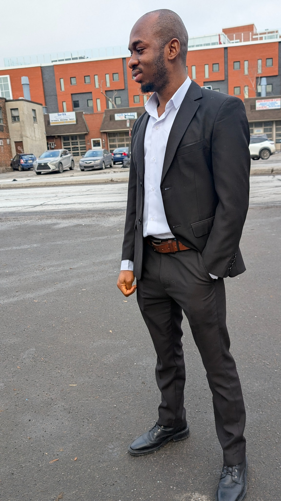

September 2022–present · Concordia University
Research Assistant, NI2Lab
Develop Python and PyTorch research software for multimodal and federated learning. Investigate data alignment, normalization, model behaviour, and comparative evaluation.
I’m Olabanji Olaide, a researcher and Python developer based in Montréal.
I study multimodal and federated learning at Concordia University’s Network Intelligence and Innovation Lab (NI2Lab). My interests centre on how data quality, privacy, and limited resources shape learning in distributed systems.
Alongside research, I build tools for model evaluation, prediction services, and human review. I value software that makes its decisions and limitations available for inspection.

September 2022–present · Concordia University
Develop Python and PyTorch research software for multimodal and federated learning. Investigate data alignment, normalization, model behaviour, and comparative evaluation.
2023–2026 · Concordia University
Support technical-report, graduate-seminar, and real-time systems courses: ENGR 411, ENCS 8011, and COEN 320.
June–December 2021 · University of Ibadan
Supported research and teaching activities in data science and machine learning.
Ongoing · Concordia University
Electrical and Computer Engineering · Montréal, Canada
2018–2021 · University of Ibadan
2010–2015 · LAUTECH
I’m seeking applied AI, machine learning engineering, and Python development opportunities in Canada. I also welcome conversations about research software, multimodal learning, and evaluation.